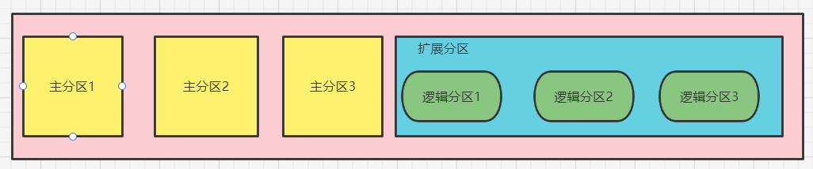
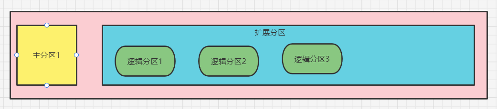

# 回顾分区和文件系统
# 分区类型
分区主要有以下几种类型：
- 主分区：总共最多只能分四个
- 扩展分区：只能有一个，也算作主分区的一种，也就是说主分区 + 扩展分区最多有四个。但是扩展分区不能存储数据和格式化，必须再划分成逻辑分区才能使用。
- 逻辑分区：逻辑分区是在扩展分区中划分的，如果是 IDE 硬盘，linux 最多支持 59 个逻辑分区，如果是 SCSI 硬盘，linux 最多支持 11 个逻辑分区。

分区的设备文件名
| 分区 | 设备文件名 |
|---|---|
| 主分区 1 | /dev/sda1 |
| 主分区 2 | /dev/sda2 |
| 主分区 3 | /dev/sda3 |
| 扩展分区 | /dev/sda4 |
| 逻辑分区 1 | /dev/sda5 |
| 逻辑分区 2 | /dev/sda6 |
| 逻辑分区 3 | /dev/sda7 |
通常我们更习惯的分区方式是下面这种，只设一个主分区，剩余全是扩展分区，注意逻辑分区号是从 sda5 开始，也就是 1、2、3、4 只能给主分区或者扩展分区使用，不能给逻辑分区使用。

| 分区 | 设备文件名 |
|---|---|
| 主分区 1 | /dev/sda1 |
| 扩展分区 | /dev/sda2 |
| 逻辑分区 1 | /dev/sda5 |
| 逻辑分区 2 | /dev/sda6 |
| 逻辑分区 3 | /dev/sda7 |
有了分区后，我们的硬盘还不能使用，必须格式化后才可以，什么叫格式化呢？格式化就是为了写入文件系统。下面开始介绍文件系统相关知识。
# 文件系统
文件系统有很多种，比如 linux 的 ext2、ext3、ext4，下面主要介绍这几种，对于一些新的文件系统暂不考虑。
- ext2：是 ext 文件系统的升级版本，redhat linux7.2 版本以前的系统默认都是 ext2 文件系统。1993 年发布，最大支持 16TB 的分区和最大 2TB 的文件（1TB=1024G=1024 * 1024M）
- ext3：ext3 文件系统是 ext2 文件系统的升级版本，最大的区别就是带日志功能，以在系统突然停止时提高文件系统的可靠性。支持最大 16TB 的分区和最大 2TB 的文件。
- ext4：它是 ext3 文件系统的升级版。ext4 在性能、伸缩性和可靠性方面进行了大量改进。ext4 的变化可以说是翻天覆地的，比如向下兼容 ext3、最大 1EB 文件系统和 16TB 文件、无限数量子目录、Extends 连续数据块概念、多块分配、延迟分配、持久预分配、快速 FSCK、日志校验、无日志模式、在线碎片整理、inode 增强、默认启用 barrier 等。是 Centos6.3 的默认文件系统。（1EB=1024PB=1024 * 1024TB）
# 文件系统常用命令
# df 命令、du 命令、fsck 命令和 dump2fs 命令
# df 命令
命令是 df [选线] [挂载点] ，选项有：
- -a：显示所有文件系统信息，包括特殊文件系统，如 /proc、/sysfs
- -h：使用习惯单位显示容量，如 KB、MB 或 GB 等
- -T：显示文件系统类型
- -m：以 MB 为单位显示容量
- -k：以 KB 为单位显示容量。默认就是以 KB 为单位。
[root@core-pods-3 ~]# df | |
Filesystem 1K-blocks Used Available Use% Mounted on | |
devtmpfs 505336 0 505336 0% /dev | |
tmpfs 515956 0 515956 0% /dev/shm | |
tmpfs 515956 32644 483312 7% /run | |
tmpfs 515956 0 515956 0% /sys/fs/cgroup | |
/dev/sda2 22236816 3694812 17392780 18% / | |
/dev/sda1 388480 262377 105623 72% /boot | |
tmpfs 103192 0 103192 0% /run/user/0 | |
[root@core-pods-3 ~]# df -h | |
Filesystem Size Used Avail Use% Mounted on | |
devtmpfs 494M 0 494M 0% /dev | |
tmpfs 504M 0 504M 0% /dev/shm | |
tmpfs 504M 32M 472M 7% /run | |
tmpfs 504M 0 504M 0% /sys/fs/cgroup | |
/dev/sda2 22G 3.6G 17G 18% / | |
/dev/sda1 380M 257M 104M 72% /boot | |
tmpfs 101M 0 101M 0% /run/user/0 |
# 统计目录或文件大小
命令是 du [选项] [目录或文件名] ，选项有：
- -a：显示每个子文件的磁盘占用量。默认只统计子目录的磁盘占用量
- -h：使用习惯单位显示磁盘占用量，如 KB、MB 或 GB 等
- -s：统计总占用量，而不列出子目录和子文件的占用量
ll -h 统计目录有局限性。
服务器高峰期最好不要使用 du -sh / 做磁盘统计。
[root@core-pods-3 ~]# du -sh ./* | |
4.0K ./abc | |
44K ./bak | |
4.0K ./cde | |
4.0K ./cde~ | |
4.0K ./cdz~ | |
4.0K ./ls.log | |
4.0K ./test | |
8.0K ./test2 | |
[root@core-pods-3 ~]# du -sh /etc/ | |
41M /etc/ | |
[root@core-pods-3 ~]# du -ah ./* | |
4.0K ./abc | |
44K ./bak | |
4.0K ./cde | |
4.0K ./cde~ | |
4.0K ./cdz~ | |
4.0K ./ls.log | |
0 ./test/cde | |
4.0K ./test | |
4.0K ./test2/fgh | |
8.0K ./test2 | |
[root@core-pods-3 ~]# du -sh / | |
du: cannot access /proc/1684/task/1684/fd/4: No such file or directory | |
du: cannot access /proc/1684/task/1684/fdinfo/4: No such file or directory | |
du: cannot access /proc/1684/fd/3: No such file or directory | |
du: cannot access /proc/1684/fdinfo/: No such file or directory | |
3.7G / | |
[root@core-pods-3 ~]# |
du 命令和 df 命令的区别（为什么通常 df 的占用空间大于 du 看到的占用空间大小？）
df 命令是从文件系统考虑的，不光要考虑文件占用的空间，还要统计被命令或程序占用的空间（最常见的就是文件已经删除，但是程序并没有释放空间）
du 命令是面向文件的，只会计算文件或目录占用的空间
(linux 服务器应当定期重启，如果长期不重启，大量被进程占用的空间和删除的空间没有释放，所以 df 看到的远远大于 du 看到的，比如游戏服务器、文件下载服务器等)
# 文件系统修复命令 fsck
如果出现文件系统异常，可以尝试使用此命令来修复。这个命令其实不需要大家手动执行，我们系统在开机后会自动检测，而且这种是底层修复命令，有时手动执行有可能造成问题（导致系统崩溃等），尽量不要手动执行，了解即可。命令是 fsck [选项] 分区设备文件名 ，选项有：
- -a：不用显示用户提示，自动修复文件系统
- -y：自动修复。和 - a 作用一致，不过有些文件系统只支持 - y
# 显示磁盘状态命令 dumpe2fs
检测磁盘状态，主要看分区的数据块，主要是超级块的详细信息，命令是 dumpe2fs 分区设备文件名 。
[root@core-pods-3 ~]# dumpe2fs /dev/sda2 | more | |
dumpe2fs 1.42.9 (28-Dec-2013) | |
Filesystem volume name: ROOTPART | |
Last mounted on: / | |
Filesystem UUID: 3437f1a0-f850-4f1b-8a7c-819c5f6a29e4 | |
Filesystem magic number: 0xEF53 | |
Filesystem revision #: 1 (dynamic) | |
Filesystem features: has_journal ext_attr resize_inode dir_index filetype needs_recovery extent 64bit flex_bg sparse_super large_file huge_fil | |
e uninit_bg dir_nlink extra_isize | |
Filesystem flags: signed_directory_hash | |
Default mount options: user_xattr acl | |
Filesystem state: clean | |
Errors behavior: Continue | |
Filesystem OS type: Linux | |
Inode count: 1411680 | |
Block count: 5664208 | |
Reserved block count: 283210 | |
Free blocks: 5142565 | |
Free inodes: 1381507 | |
First block: 0 | |
Block size: 4096 | |
Fragment size: 4096 | |
Group descriptor size: 64 | |
Reserved GDT blocks: 459 | |
Blocks per group: 32768 | |
Fragments per group: 32768 | |
Inodes per group: 8160 | |
Inode blocks per group: 510 | |
Flex block group size: 16 |
# 挂载命令
# 查询与自动挂载
linux 中所有可存储设备，比如 U 盘、软盘、光盘等都需要挂载后才能使用（注意硬盘是系统自动挂载，所以可直接使用，不需要手动进行挂载），linux 中每个硬件都有一个设备名，而且光盘也都有自己的挂载点，我们需要将设备名和挂载点（类似 windows 中的盘符，不过 windows 都是全自动的）联系起来，这个连接过程就是挂载。我们可以使用 mount [-l] 命令查询系统中已经挂载的设备，-l 会显示卷标名称。
[root@core-pods-3 ~]# mount | |
sysfs on /sys type sysfs (rw,nosuid,nodev,noexec,relatime) | |
proc on /proc type proc (rw,nosuid,nodev,noexec,relatime) | |
tmpfs on /dev/shm type tmpfs (rw,nosuid,nodev) | |
tmpfs on /run type tmpfs (rw,nosuid,nodev,mode=755) | |
/dev/sda2 on / type ext4 (rw,noatime,discard,data=ordered) | |
/dev/sda1 on /boot type ext3 (rw,noatime,discard,data=ordered) | |
... ... |
从上面结果可以看出，proc 和 sysfs 是内存挂载点，tmpfs 是临时文件挂载点，根 / 挂载的设备名是 /dev/sda2，/boot 挂载的设备是 /dev/sda1
也可以使用 mount -a 依据配置文件 /etc/fstab 的内容，自动挂载。光盘、u 盘、移动硬盘尽量不要做成自动挂载，假如说你的光驱里没有光盘，设置了自动挂载可能会导致系统启动失败。
# 挂载命令格式
命令比较复杂，命令是 mount [-t 文件系统] [-L 卷标名] [-o 特殊选项] 设备文件名 挂载点 。其实前面选项不写也行的（不写有个默认），这个主要就是将设备文件名和挂载点连接起来。选项有：
- -t 文件系统：假如文件系统类型来指定挂载的类型，可以 ext3、ext4、iso9660（光驱）等文件系统（fat16 - fat， fat32 - vfat）
- -L 卷标名：挂载指定卷标的分区，而不是安装设备文件名挂载。其实就是给你的分区起了个别名，不起也没事，意义不大
- -o 特殊选项：可以指定挂载的额外选项。
| 参数 | 说明 |
|---|---|
| atime/noatime | 更新访问时间 / 不更新访问时间。访问分区文件时，是否更新文件的访问时间，默认为更新 |
| async/sync | 异步 / 同步，默认为异步 |
| auto/noauto | 自动 / 手动，mount -a 命令执行时，是否自动安装 /etc/fstab 文件内容挂载，默认为自动 |
| defaults | 定义默认值，相当于 rw，suid，dev，exec，auto，nouser，async 这七个选项 |
| ++ exec/noexec ++ | 执行 / 不执行，设定是否允许在文件系统中执行可执行文件，默认是 exec 允许 |
| ++ remount ++ | 重新挂载已经挂载的文件系统，一般用于指定修改特殊权限 |
| rw/ro | 读写 / 只读，文件系统挂载时，是否具有读写权限，默认是 rw |
| suid/nosuid | 具有 / 不具有 suid 权限，设定文件系统是否具有 suid 和 sgid 的权限，默认是具有 |
| user/nouser | 允许 / 不允许普通用户挂载，设定文件系统是否允许普通用户挂载，默认是不允许，只有 root 用户可以挂载分区 |
| usrquota | 写入代表文件系统支持用户磁盘配额，默认不支持 |
| grpquota | 写入代表文件系统支持组磁盘配额，默认不支持 |
[root@core-pods-3 ~]# vi demo.sh | |
[root@core-pods-3 ~]# chmod u+x demo.sh | |
[root@core-pods-3 ~]# ./demo.sh | |
Hello Jalen | |
[root@core-pods-3 ~]# mv demo.sh /home/ | |
[root@core-pods-3 ~]# /home/demo.sh | |
Hello Jalen | |
[root@core-pods-3 ~]# mount -o remount,noexec /home | |
[root@core-pods-3 ~]# /home/demo.sh | |
-bash: /home/demo.sh 权限不足 | |
[root@core-pods-3 ~]# mount -o remount,exec /home | |
[root@core-pods-3 ~]# /home/demo.sh | |
Hello Jalen |
# 挂载光盘与 U 盘
# 挂载（卸载）光盘
- 建立挂载点：
mkdir /mnt/cdrom/（通常：/mnt 挂 u 盘，/media 挂光盘，并不强制，看习惯） - 把光盘放入光驱：虚拟机 - 设置 - 选择光盘 （注意 connected 勾选）
- 挂载光盘：
mount -t iso9660 /dev/cdrom /mnt/cdrom/或mount /dev/sr0 /mnt/cdrom，注意 cdrom 其实是 sr0 的软连接，所以两个命令执行哪个都可以，光盘文件系统默认就是 iso9660，其实也可以不用写，直接mount /dev/cdrom /mnt/cdrom/ - 访问光盘：去挂载点下访问，即 /mnt/cdrom
- 弹出光盘：要正常卸载后才能弹出光盘，命令是
umount 设备文件名或挂载点，设备名或挂载点只能写一个
# 挂载 U 盘
- 查看 U 盘设备文件名：
fdisk -l，U 盘设备名不是固定的，U 盘挂载不能用远程工具 ssh 了，只能直接登录虚拟机后再直接插入 U 盘，否则是 windows 检测的 U 盘，此时才可以切换远程工具。 - 创建挂载点：找到 U 盘设备名后，直接用 mount 挂载即可，命令是
mount -t vfat /dev/sdb1 /mnt/usb/，注意如果你的 U 盘是 fat16，直接写-t fat，如果是 fat32，要写-t vfat，注意：linux 默认是不支持 NTFS 文件系统的，如果你的移动硬盘是 NTFS，那不支持（其实也有支持方法，下一节说明），就像有些移动硬盘接入 MacOS 只能看不能改。 - 卸载：
umount /dev/sdb1
# 支持 NTFS 文件系统
Linux 默认不支持 NTFS 分区的，所以有些 NTFS 移动硬盘默认是不支持的。但是我们有几个方法可以是 linux 支持 NTFS。（注意一个区别：linux 硬件不需要驱动 <linux 内核包含>，而 windows 需要）
- 手工编译内核：重新编译内核，把 NTFS 驱动编译进来，这个很麻烦的，用的很少
- 利用第三方插件：这个比较简单，比如安装 NTFS-3G 插件
[root@core-pods-3 ~]# tar -zxvf ntfs-3g_ntfsprogs-xxxx.tgz
[root@core-pods-3 ~]# cd ntfs-3g_ntfsprogs-xxxx
[root@core-pods-3 ~]# ./configure
[root@core-pods-3 ~]# make
[root@core-pods-3 ~]# make install
[root@core-pods-3 ~]# yum install ntfs-3g
[root@core-pods-3 ~]# fdisk -l
[root@core-pods-3 ~]# mount -t ntfs-3g /dev/sdb1 /mnt/usb/ # 分区设备文件名 挂载点
[root@core-pods-3 ~]# umount /mnt/usb/
# fdisk 分区
学习用 fdisk 给我们的 linux 新建一个分区
# fdisk 命令分区过程
添加新硬盘：虚拟机断电后添加新的硬件，虚拟机 - 设置 - 添加 硬盘，添加 SCSI 硬盘
查询新硬盘是否被识别：
fdisk -l使用 fdisk 命令分区：
fdisk /dev/sdb，分区完成后 sdb 后面才会出现数字，比如 sdb1、sdb2...fdisk 交互指令说明
命令 说明 a 设置可引导标记 b 编辑 bsd 磁盘标签 c 设置 DOS 操作系统兼容标记 d 删除一个分区 l 显示已知的文件系统类型。82 为 linux swap 分区，83 为 linux 分区 m 显示帮助菜单 n 新建分区 o 建立空白 DOS 分区表 p 显示分区列表 q 不保存退出 s 新建空白 SUN 磁盘标签 t 改变一个分区的系统 ID u 改变显示记录单位 v 验证分区表 w 保存退出 x 附加功能（仅专家） 分区结束：可以重启 或者 执行
# partprobe(可以当成分区后必须执行的命令)，此时使用fdisk -l可以查看到分区了格式化分区：扩展分区不能格式化，命令是
mkfs -t ext4 /dev/sdb1创建挂载点将分区挂载上：
# mkdir /disk1# mkdir /disk5# mount /dev/sdb1 /disk1/# mount /dev/sdb5 /disk5/# mount
# 分区自动挂载与 fstab 文件修复
# /etc/fstab 文件
想要分区自动挂载，按格式修改 /etc/fstab 这个文件就行了。
- 第一阶段：分区设备文件名或 UUID（硬盘通用唯一识别码，UUID 更可靠点，dumpe2fs 命令查看）
- 第二阶段：挂载点
- 第三阶段：文件系统名称
- 第四阶段：挂载参数
- 第五阶段：指定分区是否被 dump 备份，0 代表不备份，1 代表每天备份，2 代表不定期备份
- 第六阶段：指定分区是否被 fsck 检测，0 代表不检测，其他数字代表检测的优先级，1 的优先级比 2 高，一般手工添加的都不要比 /boot 高。
[root@core-pods-3 ~]# vi /etc/fstab | |
# /etc/fstab | |
# Created by anaconda on Mon Mar 13 20:42:02 2017 | |
# | |
# Accessible filesystems, by reference, are maintained under '/dev/disk' | |
# See man pages fstab(5), findfs(8), mount(8) and/or blkid(8) for more info | |
# | |
UUID=3437f1a0-f850-4f1b-8a7c-819c5f6a29e4 / ext4 defaults,discard,noatime 1 1 | |
UUID=ad1361f7-4ab4-4252-ba00-5d4e5d8590fb /boot ext3 defaults,discard,noatime 1 2 | |
/swap none swap sw 0 0 | |
[root@core-pods-3 ~]# mount -a # 检测你添加的配置是否有问题，有问题会报错 | |
# 如果写错了，重启可以输入 root 密码，重新挂载 | |
[root@core-pods-3 ~]# mount -o remount,rw |
# 分配 swap 分区
swap 分区是必须存在的，有时使用时发现我们的 swap 分区不足，此时需要增加空间。我们可以使用 free 查看内存与 swap 分区使用情况。一般交换分区几百兆就够了，使用不多。增加分区可以使用 fdisk 命令，注意 linux swap 分区 id 号是 82，不是默认的 83，+1G
cached（缓存）：是指把读取出来的数据保存再内存当中，当再次读取时，不用读取硬盘而直接从内存当中读取，加速了数据的读取过程
buffer（缓冲）：是指在写入数据时，先把分散的写入操作保存到内存当中，当达到一定程度再集中写入硬盘，减少了磁盘碎片和硬盘的反复寻道，加速了数据的写入过程
[root@core-pods-3 boot]# free | |
total used free shared buff/cache available | |
Mem: 1031912 220112 174992 25620 636808 602040 | |
Swap: 533500 7100 526400 | |
[root@core-pods-3 boot]# free -m | |
total used free shared buff/cache available | |
Mem: 1007 215 170 25 621 587 | |
Swap: 520 6 514 | |
[root@core-pods-3 boot]# fdisk /dev/sdb # 后续一系列 fdisk 交互命令 | |
[root@core-pods-3 boot]# partprobe # 报错不用管 | |
[root@core-pods-3 boot]# mkswap /dev/sdb6 # 格式化 swap 分区，注意不是 mkfs | |
[root@core-pods-3 boot]# swapon /dev/sdb6 # 将新的 swap 分区加入 swap 分区 | |
[root@core-pods-3 boot]# free -m # 再去看 swap 空间大小 | |
[root@core-pods-3 boot]# swapoff /dev/sdb6 # 将新的 swap 分区移出 swap 分区 | |
[root@core-pods-3 boot]# vi /etc/fstab # 启动自动挂载 | |
/dev/sdb6 swap swap defaults 0 0 |